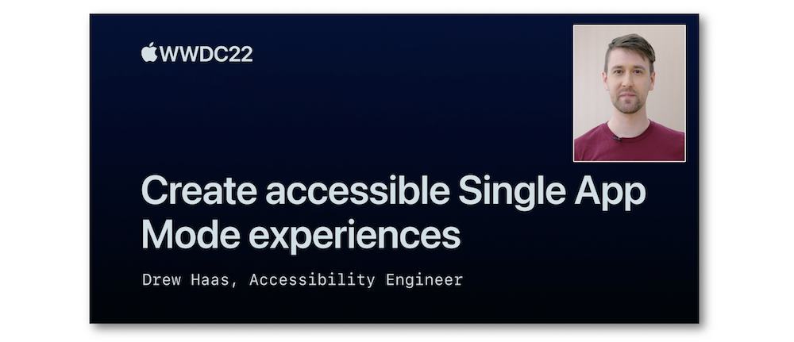
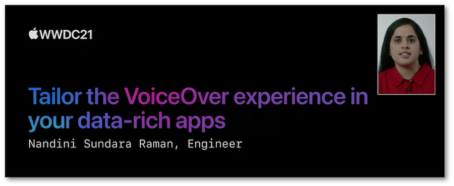
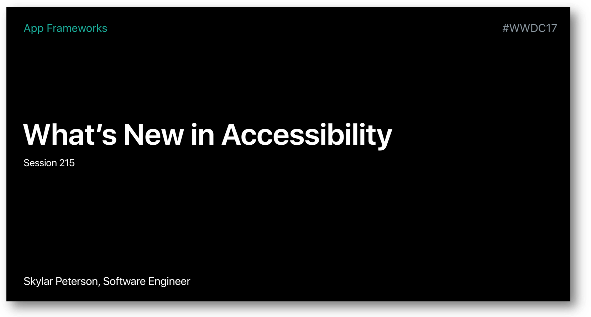
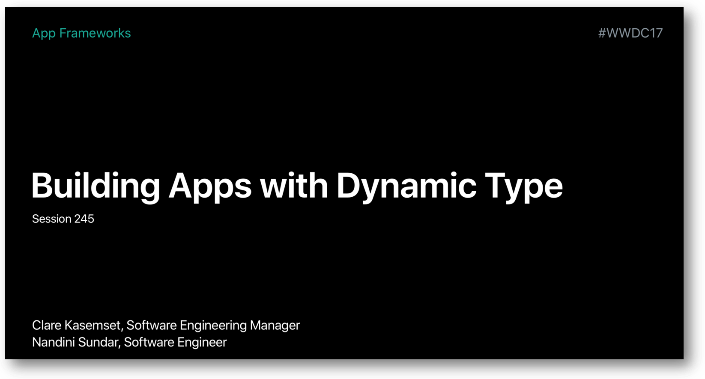

WWDC : World Wide Developers Conference
This section regroups presentations at the WWDC dealing with accessibility.
Each one of them is detailed with time references to their different contents.
Most of the illustrations are parts of Apple presentations and are available at the Resources section inside the Overview sheet of each video.
The summary of each video can be reached on clicking the title or the image presentation.
2022 - Create accessible Single App Mode experiences #
This video outlines different ways to get more control and accessibility to people using apps in Single App Mode.

2021 - Bring accessibility to charts in your app #
This video highlights the iOS 15 new feature called audio graph that further improves the data presentation of charts for the VoiceOver users.

2021 - Tailor the VoiceOver experience in your data-rich apps #
This video session deals with the the ways the Accessibility Custom Content feature works and should be implemented.

2020 - VoiceOver Efficiency with Custom Rotors #
Explanations about custom rotors are enlighted thanks to an application for which the rotor functionalities implementations are detailed in depth.
2020 - App Accessibility for Switch Control #
Many improvements for the user experience dealing with the Switch Control feature are listed and perfectly explained in this video session.

2020 - Make Your App Visually Accessible #
This footage highlights a bundle of criteria and methods to render an optimal accessible visual aspect to a mobile application.

2019 - Large Content Viewer #
This video session deals with the Large Content Viewer feature that helps people who prefer and/or need larger text sizes.

2019 - Accessibility lessons #
This video session encompasses four short presentations dealing with accessiblity.

2018 - Deliver an exceptional accessibility experience #
This presentation is a detailed explanation of functionalities for visual impaired people leading to a very good user experience.
A demo application will highlight these functionalities purposes so as to understand the rationale behind their implementation.

2018 - AVSpeechSynthesizer #
This short video introduces the essential elements to be implemented so as to make an iOS application talk.

2017 - What's New in Accessibility #
Introduction of new iOS 11 accessibility features merging the user and the developer sides.

2017 - Building Apps with Dynamic Type #
Dynamic Type highlights the iOS capacity to adapt the text size according to the user settings.
This video contains a theoretical approach to understand all the Dynamic Type possibilities as well as a practical part dealing with the developer side to avoid common pitfalls.

2016 - What's New in Accessibility #
Introduction of new iOS, MacOS, tvOS and WatchOS accessibility features merging the user and the developer sides.

2016 - Auditing Your Apps for Accessibility #
This presentation is a detailed explanation of the Accessibility Inspector Xcode tool with a programatic VoiceOver introduction at the begining.